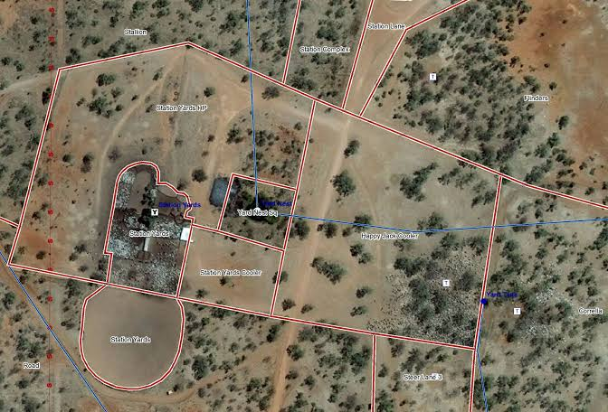

Plot A:
Plot A covers an area of 2.5 acres and is mainly used for sugarcane cultivation.
The plot has loamy soil and uses a drip irrigation system for efficient water supply.
The crop is currently in the growing stage and the soil moisture level is around 68%.
The plot was last irrigated two days ago and the overall crop condition is healthy.
Plot B:
Plot B covers an area of 1.8 acres and is used for wheat cultivation.
It has sandy loam soil and receives water through a sprinkler irrigation system.
The wheat crop is currently in the maturity stage, with soil moisture around 54%.
The plot was last irrigated three days ago and the crop is currently in good condition.
Plot C:
Plot C covers an area of 3 acres and is used for cotton cultivation.
The plot has black soil and uses drip irrigation to provide water directly to the plants.
The cotton crop is currently in the flowering stage, with soil moisture around 61%.
The plot was last irrigated one day ago and is in good condition, although regular monitoring is recommended.